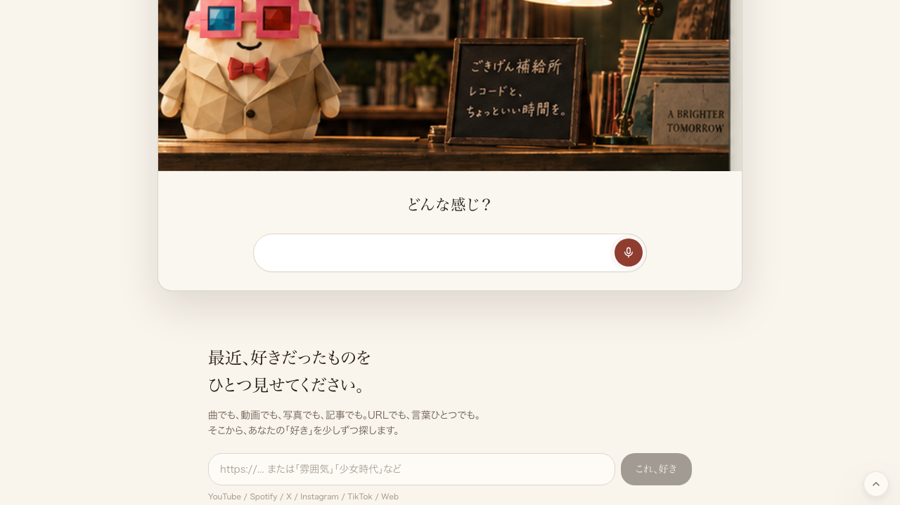

押す前(案内所ページ)
話すボタンを押した直後(接続中・赤丸)


| 確認項目 | 結果 |
|---|---|
| 本番ページが200で返るか | OK |
| 声のトークン発行が数秒以内に返るか(直接2回実測903ms→468ms) | OK |
| 話すボタンを押すと接続画面(マイク赤丸)まで進むか(実ブラウザ通しテスト) | OK |
| つながらない時に無限に固まらないか(3秒で見切り・コード確認) | OK |
| xAIが使えない時に黙って終わらないか(ブラウザ内蔵音声へ自動切替・コード確認) | OK |
src/lib/voiceConcierge.ts に追加：
const VOICE_CONNECT_TIMEOUT_MS = 3000;
function withConnectTimeout(promise, ms = 3000) {
// 3秒以内にpromiseが解決/拒否しなければタイムアウトエラーで拒否
}
src/components/VoiceConcierge.tsx に追加：
connectTimeoutRef.current = setTimeout(() => {
if (connectSettledRef.current) return;
handleFallback({
reason: "connection_failed",
message: "つながるのに時間がかかりすぎちゃった。かわりにおすすめを置いておくね。",
});
}, 3000);
新規: src/lib/localVoiceConcierge.ts
→ ブラウザ標準のspeechSynthesis(声)/SpeechRecognition(耳)だけで
卵が喋り聞く。追加の鍵もサーバーも課金も不要。
src/components/VoiceConcierge.tsx の onFallback を変更：
xAIが使えない(budget_exceeded等)時、「またあとで話しかけてね」で
黙って閉じるのをやめ、LocalVoiceConcierge へ自動で切り替える。
xAIが戻れば通常どおりxAIが主役に戻る。